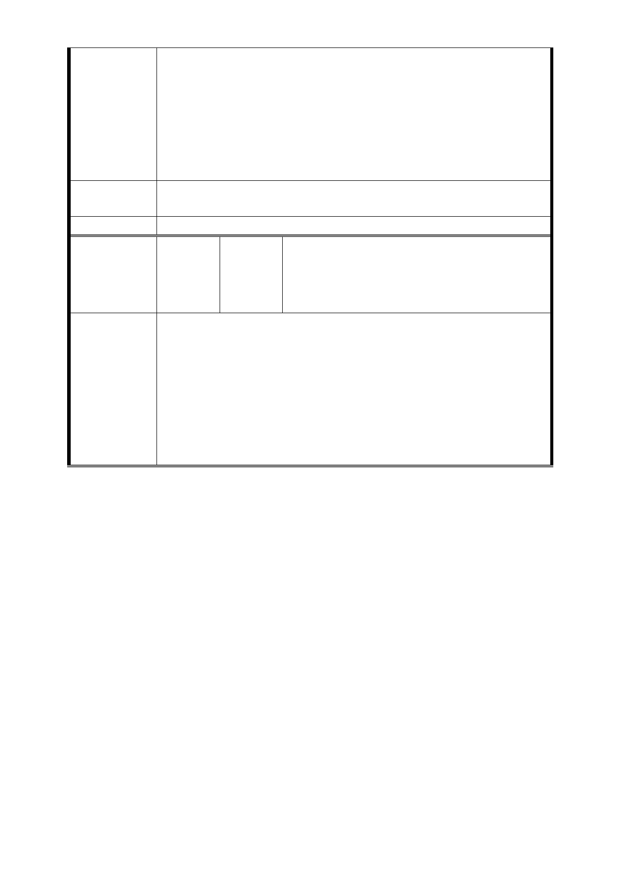

一、任何形式的開發案都一再侵害我們的權益，紛擾多年我
們已受夠了，我等現住戶地主拒絕任何形式威逼利誘的聯合
開發案。
二、捷運萬大線 LG01 站土地開發案，強行霸佔我們的自有土
地，我等現住戶地主堅決反對。
三、還我土地、還我安寧生活，堅決反對拆遷、一切維持現
狀。
市府回應
意見
同編號捷四-10 回應意見。
委員會決議 同編號交一－1 委員會決議。
揭發捷連局違反公平正義-以聯合開發用
編
號 捷四-14
陳情人
地興建臨時市場，安置南門市場攤商不公
不義之舉自救會 連署代表人：陳鴻球
（103.10.9）
主旨:捷運系統萬大線台北市段LG01站捷四土地開發基地
案，詳如說明，請查照。
說明：
陳情理由
1.反對捷運局計畫利用聯合開發，將徵收私有土地，先挪用
給南門市場攤商使用，違反公平正義。
2.堅決反對作為臨時市場用地，捷運局提出任何補償方式都
不接受！
3.居民已成立自救會，名單正在陸續聯署進行中。(如附件1)
- 51 -